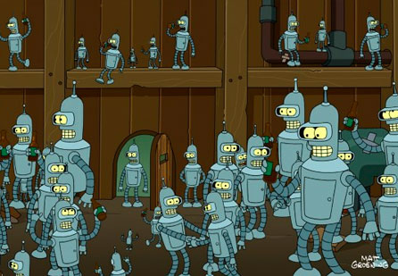

Rich Internet Applications
02.JS.Libraries
Good News Everyone!

The bad news: JavaScript is broken.
The good news: It can be fixed with more JavaScript!
Is JS really broken?
- No, but it looks like it
- Culprit: the JS & DOM implementations in the browsers
- Not all browsers/versions include the same JavaScript version
- Not all browsers/versions have implemented the DOM Spec in the same manner (back in the day the DOM wasn't even formalized)
- Some browsers/versions have implemented the DOM/JS spec wrongly
- Some browsers/versions have added their own proprietary features
- Also: some browsers have memory leaks
- Things have gotten better by now, yet we sometimes are forced to support an old/faulty version/syntax
Browser Support
Cool, just like in Star Tre--!
Graded Browser Support (1)
-
So which browsers do we need to support then?
- You don't need to support all versions of all browsers
- You need to support the browsers your visitors use
- The Yahoo! A-Grade Browsers list
- List of browsers in which your website must work
- Based upon visitor statistics
- Last updated 07/2011 (ages ago in webdev!)
Graded Browser Support (2)
- Wow, IE6? Seriously?
- Let's take a look at the current IE statistics
- IE6 & IE7 nearly dead by now
- IE8 still quite popular even though IE9 is out
Graded Browser Support (3)
- What about Firefox? It mentioned Firefox 3
- Firefox 3.6 usage dropped when 4 was released
- Quite good adoption rate (1/2 year)
Browser Adoption Rates
- The faster a new version gets adopted by the users, the faster you can drop support for an older version
A-Grade Browsers (updated)
-
With the information we have, we can compile our own A-Grade Browsers list
- Internet Explorer 8+
- Chrome (Latest)
- Firefox (Latest)
- Safari 5+
Writing JavaScript
- If we were to write a script, we'll have to make it work in the A-Grade Browsers
-
Supporting all these browsers will be painful
- Simple example: IE8 has no
Element#addEventListenersupport but uses its own proprietaryElement#attachEventto handle events
- Simple example: IE8 has no
-
And what if our client does require IE6 support?
- IE6 is over 10 years old, and only partially implements DOM Level 0
-
In the end, we want to write JavaScript, not fix browser inconsistencies
- Luckily for us, some smart people have already pondered these inconsistencies
Sidenote
dowebsitesneedtolookexactlythesameineverybrowser.com
But your site does need to work in every browser
JavaScript Libraries

Welcome to the Head Museum. I'm Leonard Nimoy.
JavaScript Library?
- Pre-written JavaScript which allows for easier development of JavaScript-based applications.
-
Three kinds of JavaScript libraries
- Specific Libraries
- Interfaces & Widgets/Components
- General Purpose Libraries
Specific Libraries
I am Bender. Please insert girder.
Specific Libraries
- Provide in one, specific functionality
- Mostly offer some syntactic sugar
Specific Libraries: Examples (1)
DateJS — open-source JavaScript Date Library.
Specific Libraries: Examples (2)
money.js — JavaScript currency conversion
Specific Libraries: Examples (3)
SWFObject — Embed Flash Files
var flashvars = false;
var params = {
menu: 'false',
flashvars: 'name1=hello&name2=world&name3=foobar'
};
var attributes = {
id: 'myDynamicContent',
name: 'myDynamicContent'
};
swfobject.embedSWF('myContent.swf', 'myContent', '300', '120', '9.0.0','expressInstall.swf', flashvars, params, attributes);Specific Libraries: Examples (4)
highlight.js — Syntax Higlighting
Interfaces & Widgets/Components

They're 60% scale replicas of me! ... Bender!
Interfaces & Widgets/Components
- Special types of “Specific Library”
- Can provide an entire UI, or some specific UI parts.
- Re-usable
Interfaces: Example (1)
Lightbox — Overlay images on the current page.
Interfaces: Example (2)
reveal.js — An easy to use CSS 3D slideshow tool for quickly creating good looking HTML presentations.
Widgets/Components: Example (1)
TinyMCE — Rich Text Editor
Widgets/Components: Example (2)
Google Maps JS API — Maps & Streetview integration.
Widgets/Components: Example (3)
JavaScript DatePicker
Widgets/Components: Example (4)
JavaScript Data Grid & other UI Components such as a slider control, tabs, etc.
General Purpose Libraries

To the flying machine!
General Purpose Libraries (1)
-
Sprung up in the mid-2000's
- Browser Landscape: IE6, Firefox1, Safari2, Chrome didn't even exist
- Goal: Simplify cross-browser scripting & make writing JS bearable
-
Basic Components
- DOM Access (Selecting, Traversing, Manipulating)
- Event Handling (Simple Event Binding, Custom Events)
- Ajax
- Animations (Simple Animations, Transitions)
-
Specific libraries can use or extend a global purpose library
- Use: they needn't worry about cross-browser issues
- Extend: provide an accompanying interface/components library
General Purpose Libraries (2)
- We'll take a look at these 3
Prototype
- Née 2005, by Sam Stephenson
-
Focus
- Improve usability of the JS language
- Add missing JS features by extending the DOM
- Working with Classes (in a non
.prototype'd way)
-
Core
- DOM
- Ajax
- DOM Extensions (eg.
String#strip,Array#reverse,Array#first,Element#hide, ...) - Helper Functions (
$,$$,$F,$A, ...)
- Animations & Components provided by accompanying library Script.aculo.us
Prototype: Example: DOM & Events
-
Add class name to element
#messageand update itsinnerHTML$('message').addClassName('read').update('I read this message!'); -
Hook click event on some
li's$$('#bmarks li').each(function(li){ Event.observe(li, 'click', function(e) { this.style.backgroundColor = 'yellow'; }.bindAsEventListener(li)); }); -
slideDown effect (via script.aculo.us)
Effect.SlideDown('id_of_element', { duration: 3.0 });
Prototype: Example: Classes
// properties are directly passed to `create` method
var Person = Class.create({
initialize: function(name) {
this.name = name;
},
say: function(message) {
return this.name + ': ' + message;
}
});
// when subclassing, specify the class you want to inherit from
var Pirate = Class.create(Person, {
// redefine the speak method
say: function($super, message) {
return $super(message) + ', yarr!';
}
});
var john = new Pirate('Long John');
john.say('ahoy matey');
// -> "Long John: ahoy matey, yarr!"Prototype: Problems
-
Extending the DOM was a very (very!) bad idea
- Cross browser: host objects have no rules, IE DOM is a mess, etc
- Chance of collisions
- Performance Overhead
-
Not updated since 2010
- Version 2 — which didn't extend the DOM — never released
- jQuery's popularity blasted Prototype away
Yahoo! UI (YUI)
- Née 2005 (first public release 2006), by Yahoo!
-
More a framework than a library, as it offers quite a few Components/Controls and CSS Resources
- Core: DOM & Events
- Utilites: Animation, History Manager, Connection Manager (Ajax), Cookie, Element, JSON, Resize, etc.
- Controls: Autocomplete, Button, Calendar, ImageCropper, Menu, Slider, Tab View, etc.
- CSS Resources: Base, Grids, Fonts, Reset, etc.
- Dev Tools: Logging, Profiling, etc.
- Namespaced in the
YAHOOnamespace
YUI: Example: DOM & Events
YAHOO.util.Event.on(window, 'load', function() {
var div = YAHOO.util.Dom.get('messages');
if (!div) {
return;
}
setTimeout(function() {
var anim = new YAHOO.util.Anim(div, {
height: {to: 0},
opacity: {to: 0}
}, 0.4);
anim.animate();
anim.onComplete.subscribe(function() {
div.parentNode.removeChild(div);
});
}, 2000);
});YUI: Components


YUI: Version 3
-
Syntax changed under jQuery influence
YUI().use('node', function(Y) { var onClick = function(e) { var type = e.type, currentTarget = e.currentTarget, // #demo target = e.target; // #demo or a descendant Y.one('#event-result').setContent('<dl>' + '<dt>type</dt><dd>' + e.type + '</dd>' + '<dt>target</dt><dd>' + target.get('tagName') + '</dd>' + '<dt>currentTarget</dt><dd>' + currentTarget.get('tagName') + '#' + currentTarget.get('id') + '</dd></dl>'); }; Y.one('#demo').on('click', onClick); }); - Many (All?) of the components got sacked
jQuery
- Née 2006, by John Resig
-
Focus
- Improve interaction between JS & HTML
- Finding elements and then performing actions
- Short code
-
Core
- DOM (Selecting, Traversing, etc.)
- Events
- Effects (Basic Animations)
- Ajax
- Components available via jQuery UI
- Extensible with plugins
Prototype: Example: DOM & Events
-
Add class name to element
#messageand update itsinnerHTML$('#message').addClass('read').html('I read this message!'); -
Hook click event on some
li's$('#bmarks li').on('click', function(e) { $(this).css('backgroundColor', 'yellow'); }); -
slideDown effect
$('#id_of_element').slideDown(3);
On Library Architecture
-
Two architectural trends in the libraries: top-down and bottom-up
- Top-Down: Create an event listener which is linked to an element
- Bottom-up: Select an element and hook an event listener to it
-
Bottom-up takes some adjustment if you're a die-hard programmer, but it's quite fun actually
- And it opens up a whole new world: chaining!
On Library Documentation
- Documentation is as an important part of the library as the functionalities of the library itself!
- The three mentioned here provide extensive documentation (tutorials, API reference, etc.)
Questions?
Sources
- JS is broken Quote: Simon Willison
- Graded Browser Support: Yahoo!
- Browser Adoption Rates: NetMagazine.com
- IE8 attachEvents Problems: RobertNyman.com
- Prototype & YUI code examples: slideshare/simon
- JS Libraries Statistic: infragistics.com